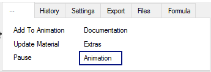

The current scene is added as animation frame by pressing the Add To Animation button. The animation control is available by click on Animation.

The controls in the history tab allows to load one of the generated scenes in this session. Mostly this control is used to undo last changes.
The animation definition is given in text form. It is possible to edit this text.
Each line in animation definition has the following format:
Run Steps NumberOfFrames Time HistoryEntryOfNextFrame # File FileName
NumberOfFrames defines th steps, HistoryEntryOfNextFrame defines the corresponding history entry. FileName is only used, if the animation was loaded to find the corresponding parameters.
Before the animation rendering is started, it is reccommended to press Preview to get an overview to the result animation. Pressing the right mouse button on the step indicator on the bottom of each animation and choosing delete in the context menu removes the correponding entry from the animation definition.

The step indicator on button of each animation step is updated while rendering the animation.
If the Checkbox Smooth is not set all scene paramerters are a linear interpolation between start and end frame. If Smooth is set an other (smoother) interpolation is used.
Pressing Stop stops the animation, but not the current rendering.